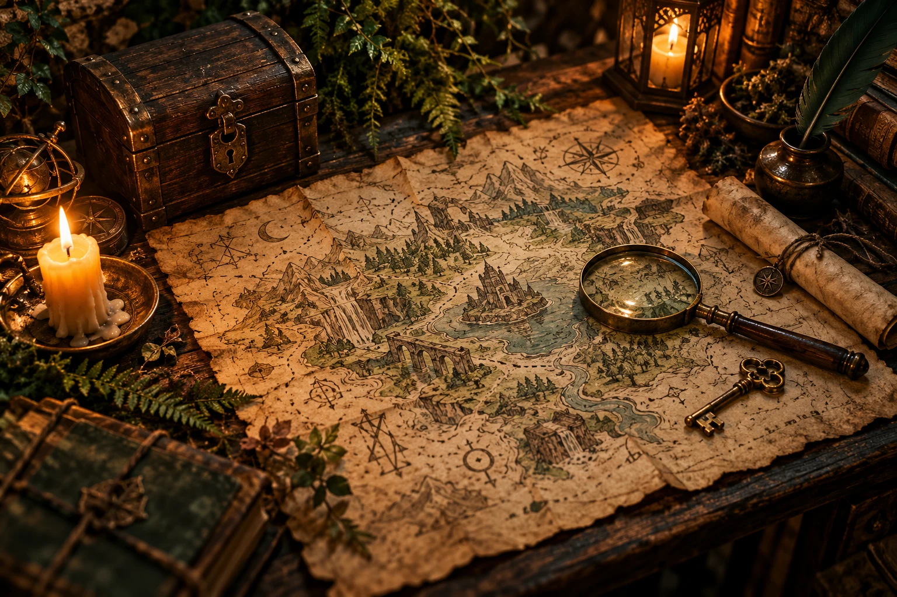

Zostav družinu
Príďte dvaja až piati. S kamarátmi, vo dvojici alebo s kolegami. Najlepšie sa podľa prevádzky hrá v trojici či štvorici.
Niektoré vedú k dobrodružstvu.
Zostav svoju družinu. Odhaľ tajomstvá.
Na cestu späť máš 70 minút.

I. KAPITOLA Za prahom všednostiILUSTRAČNÝ VIZUÁLZa nenápadným vstupom na Hlavnej ulici čaká svet záhad, skrytých indícií a hlavolamov. Tu sa nehrá na divákov. Hlavnými postavami ste vy.
Rozhliadnite sa. Spojte súvislosti. To, čo jeden prehliadne, môže druhému otvoriť cestu ďalej. Máte 70 minút — a jeden druhého.
Všímavosť, nápady a spolupráca.
Vaša partia a záhada pred vami.
Príďte dvaja až piati. S kamarátmi, vo dvojici alebo s kolegami. Najlepšie sa podľa prevádzky hrá v trojici či štvorici.
Pätnásť úloh preverí vašu všímavosť a spoločné uvažovanie. Hľadajte, skúšajte a hovorte spolu.
Sedemdesiat minút ubehne rýchlejšie, než čakáte. Podarí sa vašej družine rozlúštiť poslednú záhadu?
„Čím viac z nej vezmeš,
tým je väčšia. Čo je to?“
Aj nenápadná myšlienka môže otvoriť dvere.
Jeden priestor, jedna partia a 70 minút, ktoré spolu prežijete naplno.
Hra je určená pre 2 až 5 hráčov. Pôvodný web odporúča ako ideálny počet 3 až 4 ľudí.
Na samotnú hru máte 70 minút. Čas príchodu a ďalšie pokyny si dohodnite s prevádzkou pri rezervácii.
Na Hlavnej 116 v Košiciach, vo dvore. V spodnej časti stránky nájdete odkaz na mapu.
Toto je neoficiálna ukážka webu. Skutočnú dostupnosť overíte na pôvodnom webe alebo priamo u prevádzky: +421 950 276 020, rezervacia@escaperoomhobbit.sk.
Nie. Ide o originálne ilustračné vizuály vytvorené pre tento návrh. Finálny web môže používať nové fotografie reálnej prevádzky.
Hlavná 116, vo dvore
Košice · Staré Mesto
Aktuálne termíny a podmienky
potvrdzuje prevádzkovateľ.